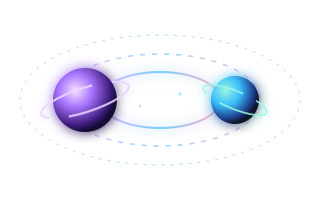

FENÓMENO FÍSICO · COINCIDENCIAS
Coincidencias en la Órbita
En el cosmos, dos cuerpos celestes con trayectorias distintas a veces vuelven a cruzarse en el mismo cuadrante. Retomar contacto y notar que hay buena onda es algo que vale la pena explorar.